Angourakis et al. - EMAC
17th September 2019
Multivariate ‘mixed-mode’ analyses
for characterising archaeological ceramics using the cerUB package in R
Andreas Angourakis, Verónica Martínez Ferreras, Josep M. Gurt
Day 2, Session 2: Session in Honour of Michael Baxter
https://andros-spica.github.io/EMAC-Angourakis-et-al-2019/index.html?print-pdf (printable version)


 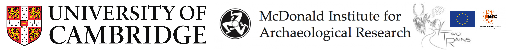
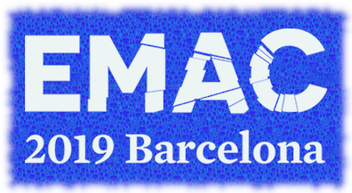
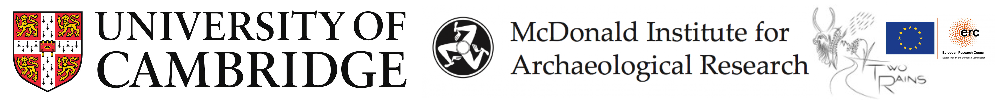
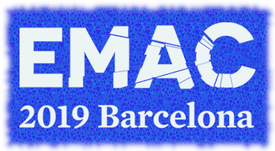
To be or not to be ---
'mixed-mode'


ceramics → X-ray fluerescence, thin section petrography, etc.

... but also are redundant to a certain extent
Few integrate such results using statistical methods

Benefits
- Statistics using ALL information available
- Synthetic visualisation
Challenges
- Multivariate statistics: hard and demanding
- Computational tools still underdeveloped in terms of user-friendliness and documentation
- Most archaeologists are not convinced by the benefits of scripting (reproducibility!)
Baxter M J, Beardah C C, Papageorgiou I, Cau Ontiveros M-Á, Day P M and Kilikoglou V (2008).
On statistical approaches to the study of ceramic artefacts using geochemical and petrographic data. Archaeometry, 50:142–57.
http://doi.wiley.com/10.1111/j.1475-4754.2007.00359.x
A 'mixed-mode' approach to ceramics
the 'apples'
Geochemical compositions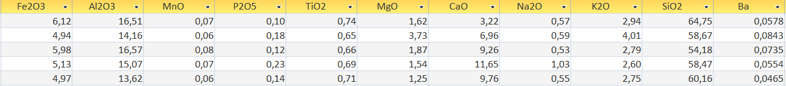
numeric and continuous
tractable with widely-known quantitative methods
the 'oranges'
Macroscopic and thin-section petrography, other qualitative assessments
ordinal or nominal variables with no direct numeric representation*
demands specialised methods
*Assuming not using point-counting or similar techniques


Transform ordinal variables into:
- 'binary dummy variables' (Baxter et al. 2008)
- numeric continuous variables
- ranks (Podani 1999)
Podani (1999). Extending Gower General Coefficient of Similarity to Ordinal Characters. Taxon, 48(2): 331-340. http://www.jstor.org/stable/1224438
Four protocols
- For geochemical data (CHEM)
- For mineralogical/petrographic data (PETRO)
- all geochemical and mineralogical/petrographic data (CHEM + PETRO)
- For geochemical and a subset of mineralogical/petrographic data best representing provenance (CHEM + PETROPROV)
Case study: Roman wine amphorae

- Wine Roman amphorae from Hispania Citerior-Tarraconensis (Catalonia)
- 175 individuals from 15 workshops (Martínez Ferreras 2014)
- 61 individuals from 3 shipwrecks in the region (Martínez Ferreras et al. 2013, 2015)
- Dated from c. 75 BC to c. 50 AD
Data sources
- Geochemical composition: X-ray fluorescence readings (XRF-WD) using a Philips PW 2400 spectrometer
- Range of firing temperature: estimated with mineralogical phase by X-ray diffraction readings (XRD) using Siemens D-500 and Panalytical X'Pert PRO alpha 1 diffractometers
- Petrographic observations: thin-section analysis using polarising optical microscope Olympus BX41, digital camera Olympus DP70, and Analysis Five software (following Whitbread 1995)
Protocol 1
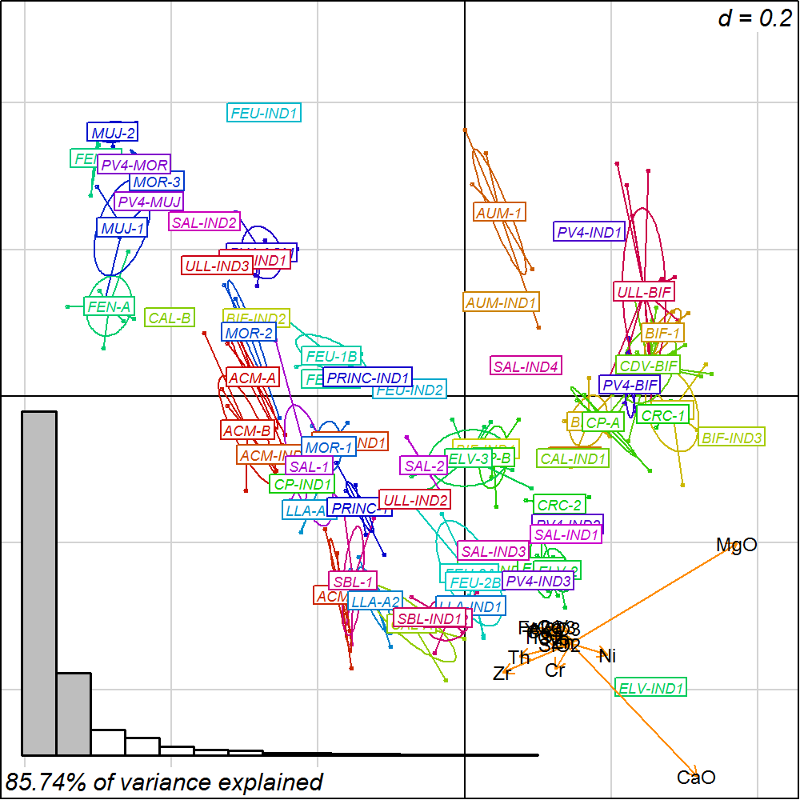
CHEM dataset
+
isometric log-ratio transformation (ILR)
+
robust Principal Components Analysis (robPCA)
Filzmoser, Hron and Reimann (2009). Principal component analysis for compositional data with outliers. Environmetrics, 20:621-632. DOI: 10.1002/env.966
Protocol 2
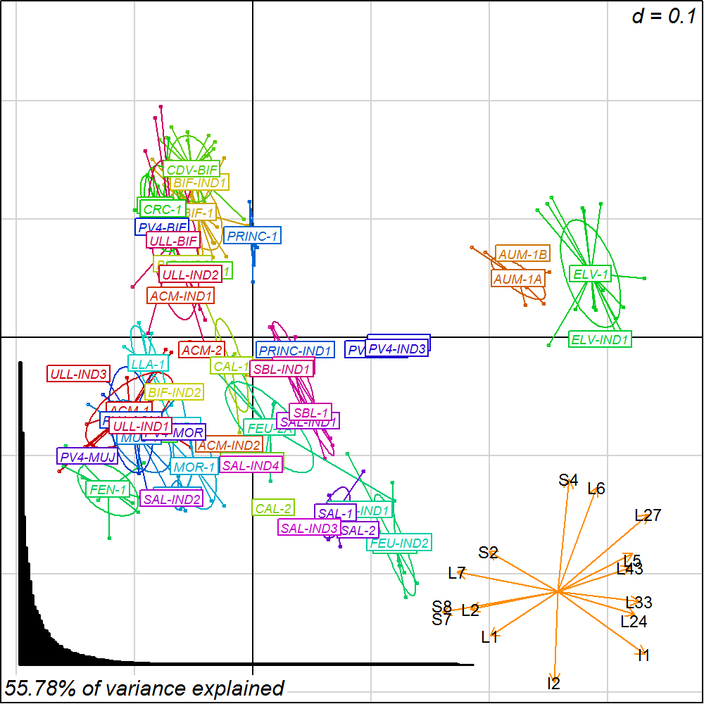
PETRO dataset
+
transformation to ranks
+
Relative ranking difference (RRD)
+
Principal Coordinates Analysis (PCoA)
Protocol 3
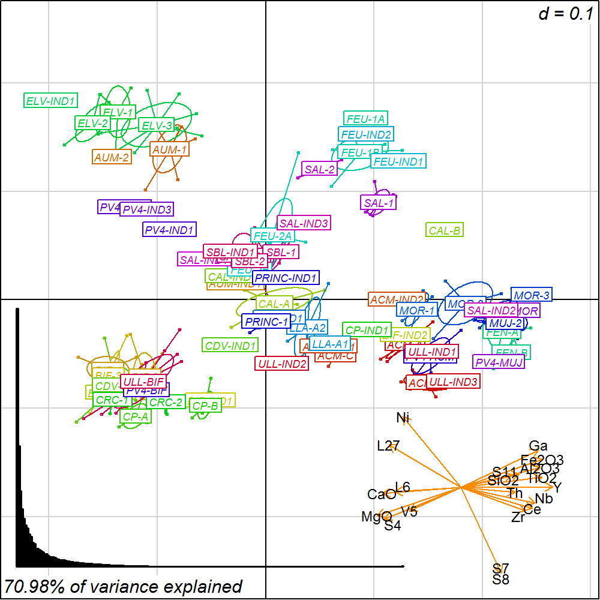
CHEM + PETRO dataset
+
CHEM: centred log-ratio transformation (CLR)
PETRO: transformation to ranks + Relative ranking difference (RRD)
+
Extended Gower distance
+
Principal Coordinates Analysis (PCoA)
Protocol 4
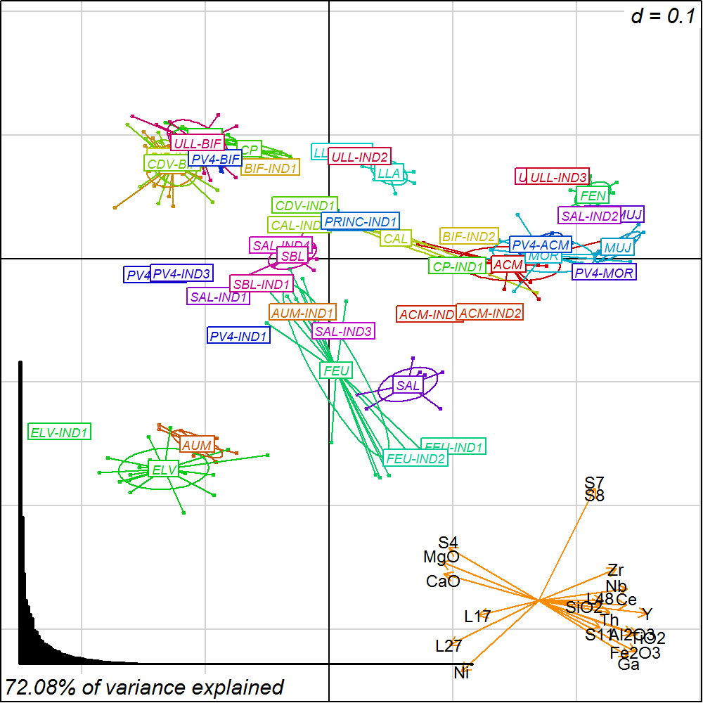
CHEM + PETROPROV dataset
+
apply procedures in Protocol 3
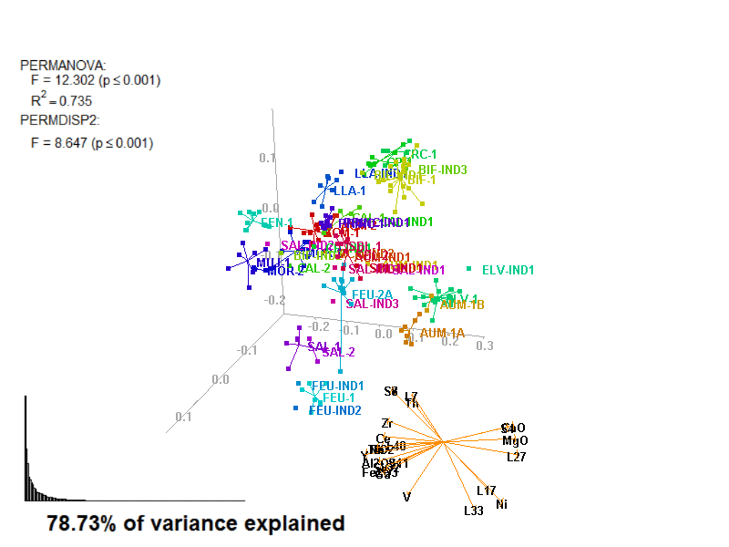
General comparison
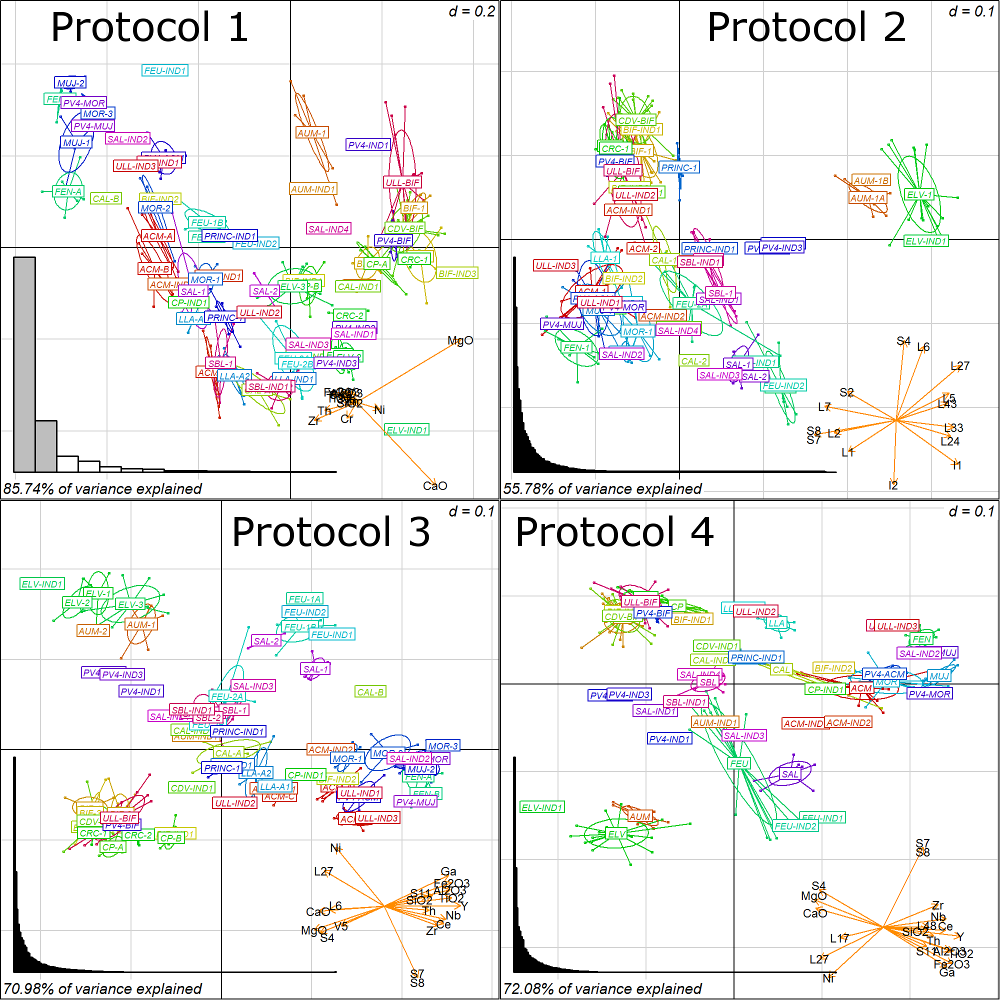Case study: tableware from Bactria

- Tableware from NW ancient Bactria (Surkhan Darya region, Uzbekistan)
- 45 individuals from 4 sites: Kampyr Tepe (KPT) (Martínez Ferreras 2015) and three locations associated to ancient Termez (KT, TT, ISL) (Tsantini et al. 2016)
- KPT dates from the Hellenistic Period (c. 327-140 BC), TT the Yuezhi Period (c. 148 BC to 78 AD), KT the Kushan-Sassanian Period (c. 280-400 AD), and ISL the Late Pre-Mongol Islamic Period (c. 1000-1200)
General comparison
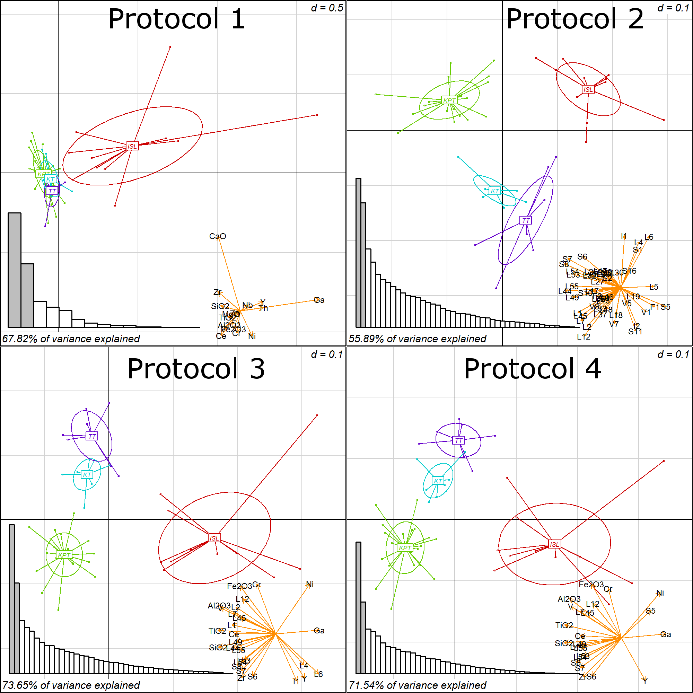Custom biplots can be done with biplot2d3d
Angourakis, A., Martínez Ferreras, V., Torrano, A. and Gurt Esparraguera, J.M. (2018). Presenting multivariate statistical protocols in R using Romanwine amphorae productions in Catalonia, Spain. Journal of Archaeological Science, 93: 150-165. https://doi.org/10.1016/j.jas.2018.03.007
Visit the cerUB package tutorial:
https://andros-spica.github.io/cerUB_tutorial
Funding
Characterization and modeling of technological processes in the manufacture of ceramics from ancient societies in Central Asia. From Hellenism to Islam (CAMOTECCER), HAR2012-32653, funded by Ministerio de Economía y Empresa, Secretaría de Estado de Investigación, Desarrollo e Innovación (Ayudas para la realización de proyectos de investigación, Subprograma de proyectos de investigación fundamental no orientada).Las sociedades antiguas complejas de Asia Central a través de la cerámica. Entre la tradición nómada y las influencias mediterráneas (CERAC), HAR2016-75133-C3-1-P, (subprojetcs: Caracterización arqueométrica de cerámicas de Asia Central: Patrones tecnológicos, interacción y evolución cultural [CATECCER], HAR2016-75133-C3-3-1-P, and Centros de producción cerámica y centros de consumo en Asia Central: Contextualización arqueológica [CONCERAC], HAR2016-75133-C3-3-P), funded by the Ministerio de Ciencia, Innovación y Universidades (Plan Estatal de Investigación Científica y Técnica y de Innovación 2013-2016).
Termez en Bactriana, Fundación Palarq. Paleoantropología y Arqueología. Convocatoria del año 2017.


Multivariate ‘mixed-mode’ analyses
for characterising archaeological ceramics using the cerUB package in R
Andreas Angourakis, Verónica Martínez Ferreras, Josep M. Gurt
Day 2, Session 2: Session in Honour of Michael Baxter>
THANK YOU!
address any questions to A. Angourakis: andros.spica@gmail.com
available at https://andros-spica.github.io/EMAC-Angourakis-et-al-2019/https://andros-spica.github.io/EMAC-Angourakis-et-al-2019/index.html?print-pdf (printable version)